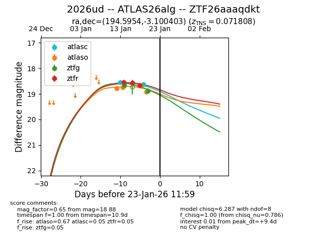
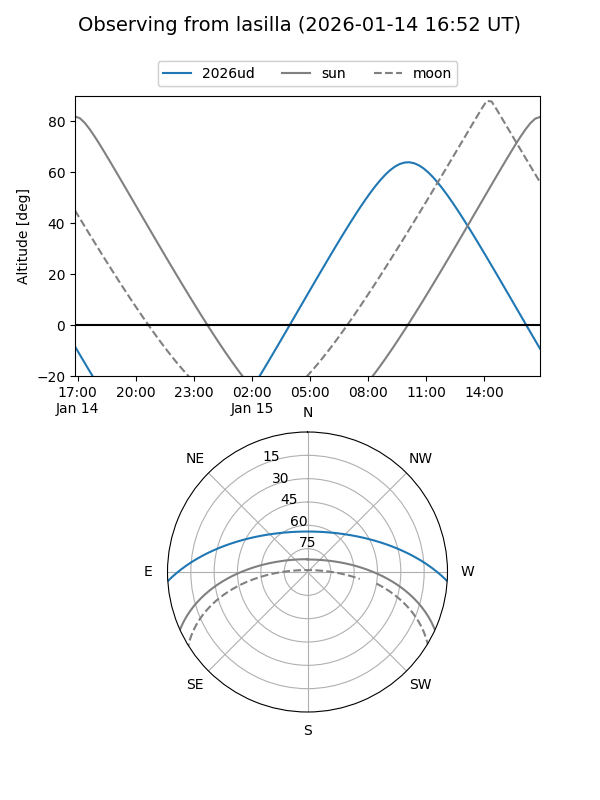
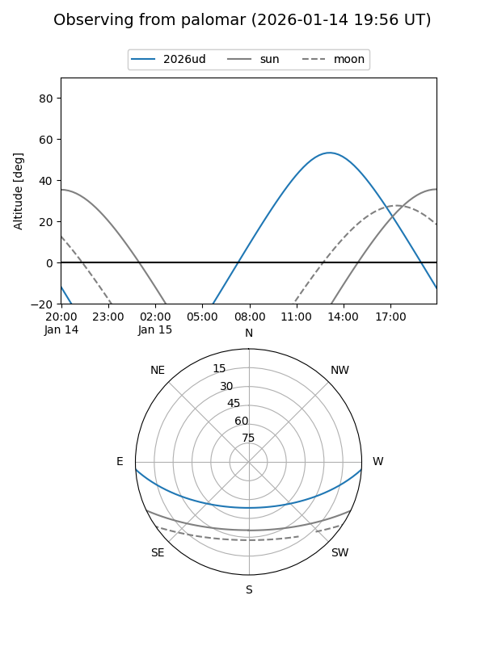
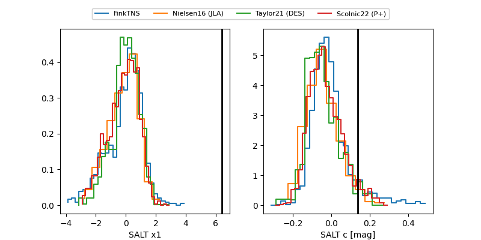

2026ud
Target 2026ud at 2026-01-16 01:31
Aliases and brokers:
FINK: link
Lasair: link
ALeRCE: link
TNS: link
YSE: link
alt names
ZTF26aaaqdkt (ztf,fink_ztf)
2026ud (tns,yse)
ATLAS26alg (atlas)
Coordinates:
equatorial (ra, dec) = 194.5954,-3.10040
equatorial (HMS+DMS) = 12:58:22.89,-03:06:01.45
galactic (l, b) = (306.3717,+59.72496)
Flags:
confirmed ia
Photometry:
last ztfg=18.67, ztfr=18.54
1 ztfg, 1 ztfr detections
Lightcurve

Visibility


Additional plots
